| 日付 | 2022年6月19日（日） |
|---|---|
| 山域 | 奥秩父 |
| メンバー | 家族（妻、長男・9歳） |
| 山行形態 | 子連れ日帰り |
| アクセス | 車 |
| ルート (Map) | 乾徳山登山口駐車場 (8:11) - (8:45) 乾徳山登山口 - (10:21) 国師ヶ原 - (11:56) 乾徳山 (12:37) - (13:53) 国師ヶ原 - (14:38) 道満山 - (15:27) 乾徳山登山口駐車場 |
梅雨の晴れ間。西の方が晴れそうなので、乾徳山に行くことにする。
娘は行きたくないということでパス。息子を説得して連れてくる。
駐車場に到着。標高940m。
頑張って朝早く起きて来たが、それでも駐車場にはすでに多くの車が停まっている。
朝から暑い。そして目の前を飛び回る虫が鬱陶しい。
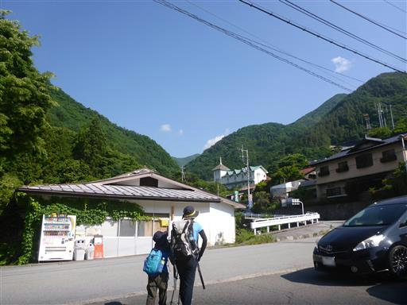
最初は車道を歩いて登山口を目指す。
過去2回同様、8の字状の周回コースを歩く予定。
こちらの道を登りに使うのが一般的で、3回連続で同じルートだ。
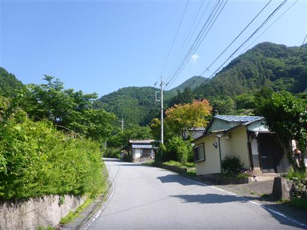
うんちマークのトイレ？
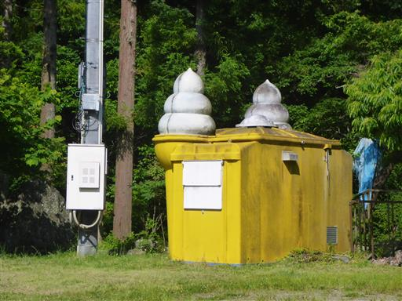
道路脇にある乾徳神社に寄り道。
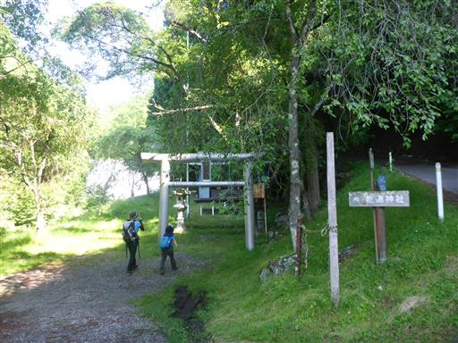
質素な神社。手を合わせて先に進む。
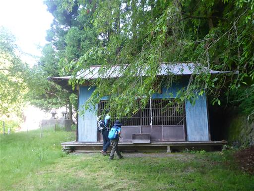
30分の車道歩きで登山口に到着。
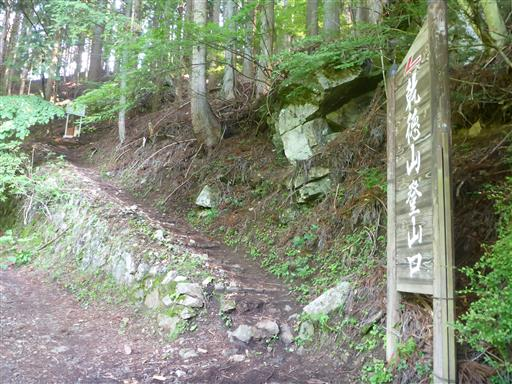
樹林帯の中の緩やかな傾斜の道が続く。
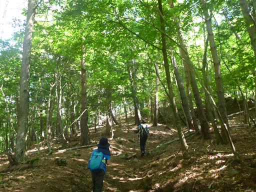
足元に咲くフタリシズカ。
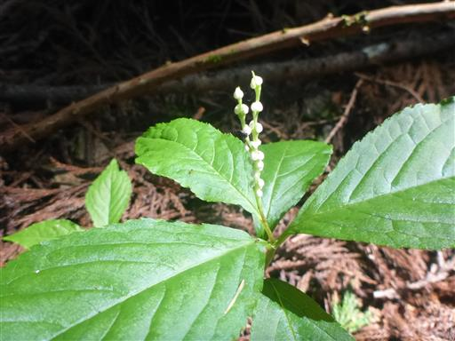
オトシブミを発見。
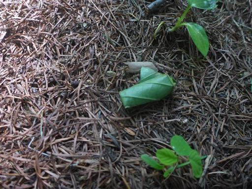
岩ゴロゴロ地帯に突入。
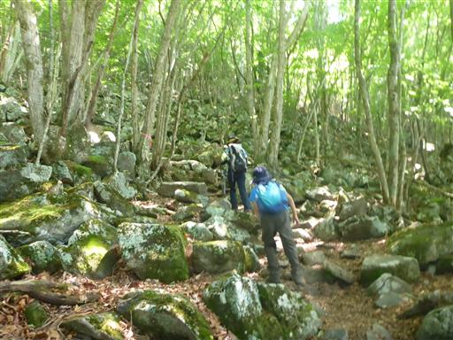
錦晶水。冷たくておいしい水が流れている。
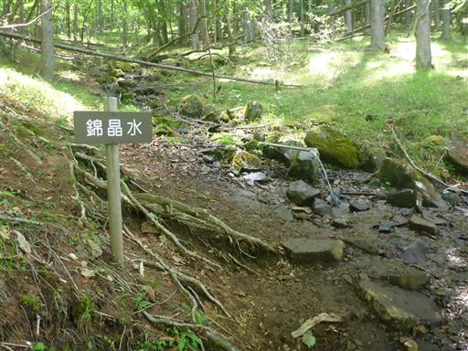
国師ヶ原に到着。ようやく乾徳山の山頂部が見えてくる。
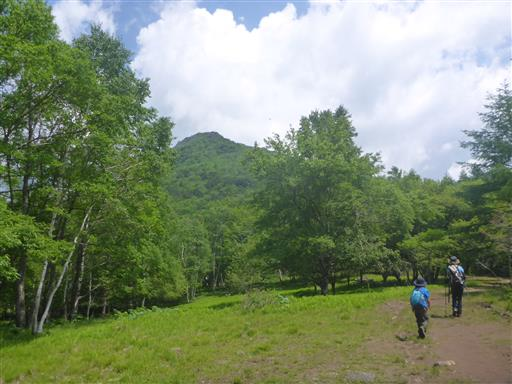
8の字の真ん中の登山道十字路を通過。

巨大な岩。近くに前宮跡との標識があるが、この岩のことなのだろうか？
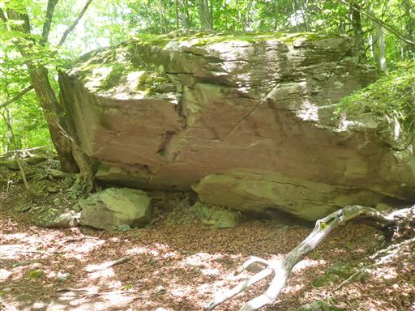
登山道周辺に巨大な岩が見られるようになる。
「今日は岩山」と息子に伝えていて、息子は岩を期待して来ていたので、
あちらこちらの岩に登って写真撮影を要求される…
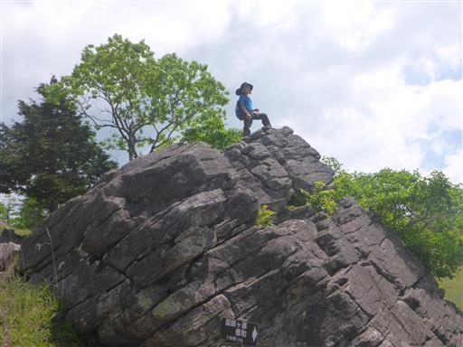
ミヤマキンポウゲのお花畑。
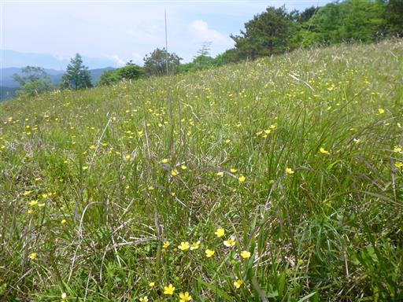
手洗石。水が溜まっているが、ボウフラがいて手を洗う気にはなれない。
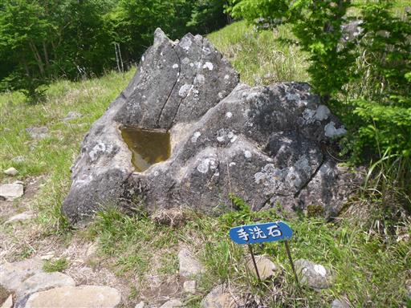
ようやく鎖場が現れる。
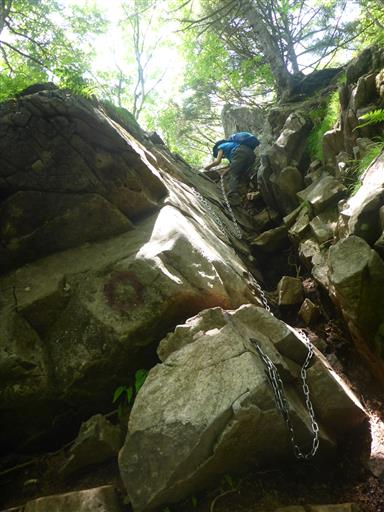
岩の上の展望台。ちょっと雲が多いが、素晴らしい展望が広がる。
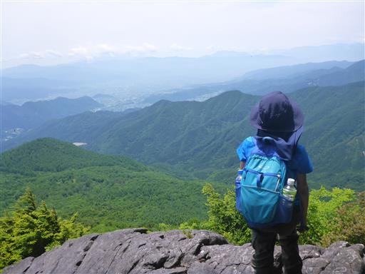
髭剃岩。とにかく狭い岩の隙間を通る。その先は断崖だ。
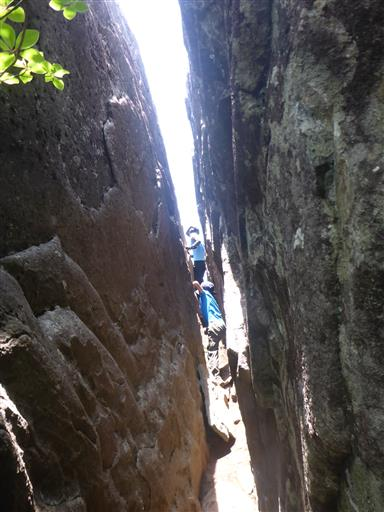
岩場が連続する登山道が続く。
この辺りは歩いていて非常に楽しい。
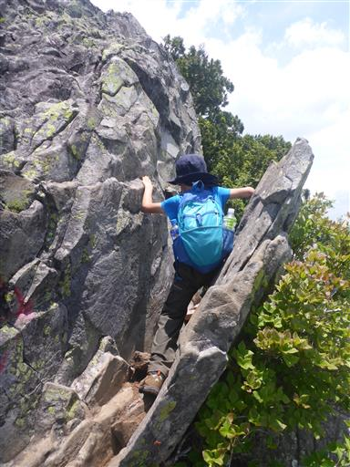
鉄製の梯子を下る。15年前の記録では木の梯子だったが
長い年月のうちにかけ替えられたようだ。
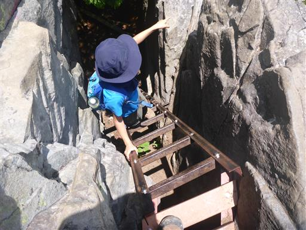
カミナリ岩。
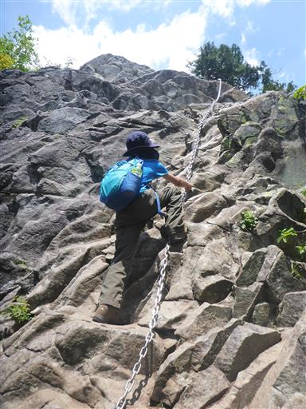
この壁は鎖を使わずにクリア。
手足をかけるところが多いので、比較的登りやすい。
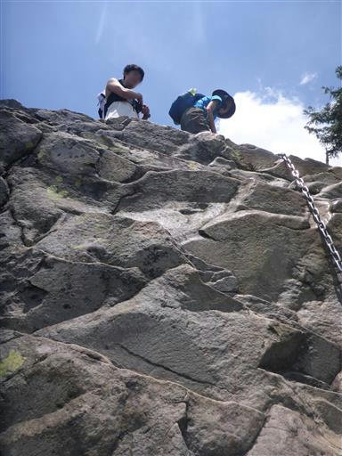
胎内潜り。かなり狭く、足元も悪い。
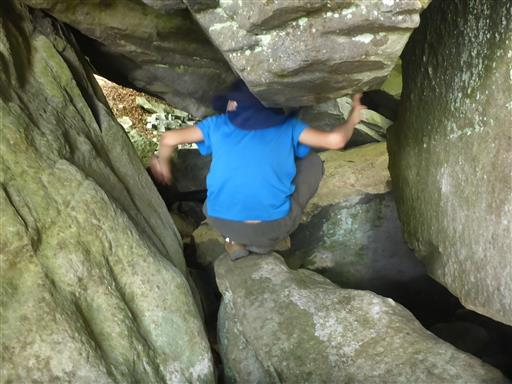
無事通り抜ける。
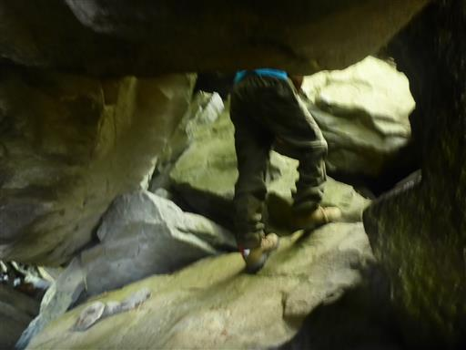
山頂直下の最後の鎖場に到着。
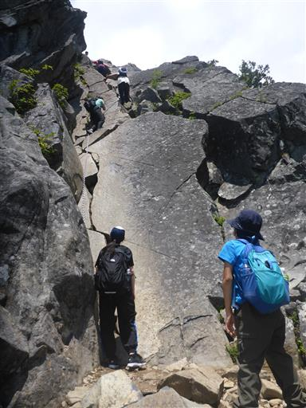
鎖を使わずに登ろうと頑張っているが、ちょっと無理そうだ。
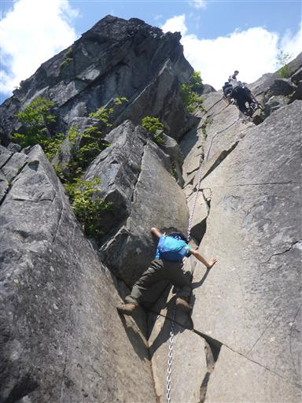
鎖を掴んで無事クリア。自分も序盤の滑々ゾーンは鎖に頼ってしまった。

乾徳山山頂に到着。標高2031m。
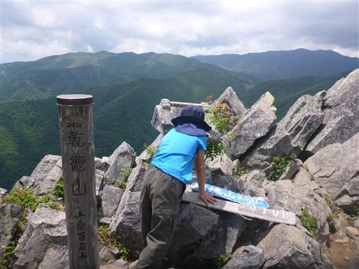
山頂は相変わらず狭い。今日はさほど混雑していないため助かる。
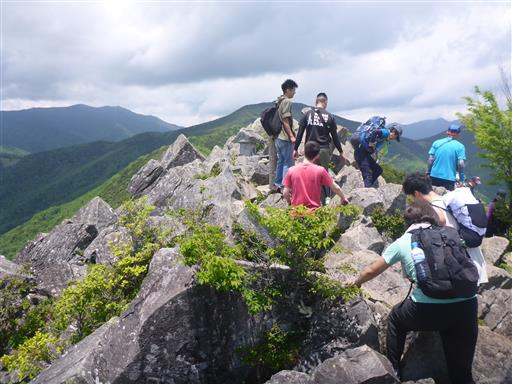
山頂からの景色。
雲が多く霞んでいるが、梅雨の季節にしては上出来だろう。
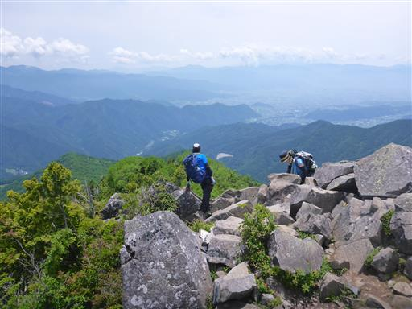
金峰山の頭だけ見えている。
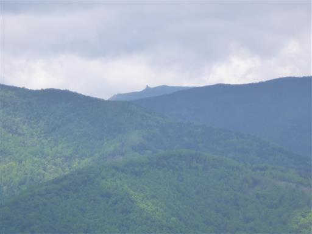
昼食を取ったら下山開始。下山道も最初は少し鎖・梯子がある。
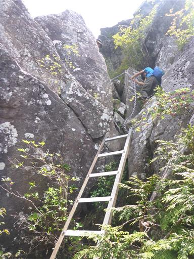
ベニサラサドウダン。美しい紅色だ。
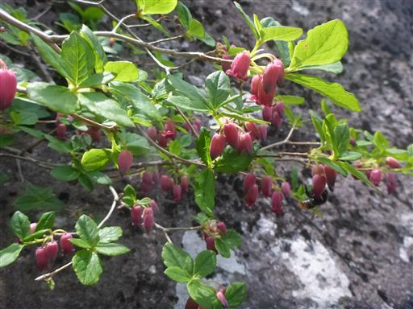
岩だらけの道を下る。
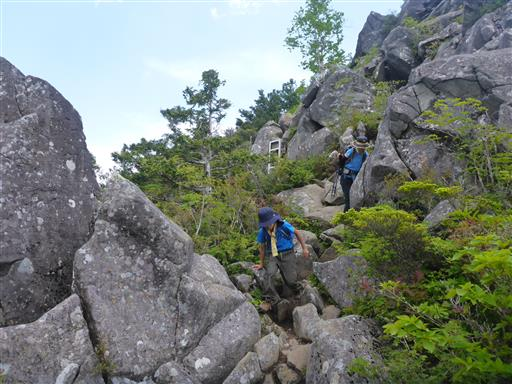
振り返って山頂を望む。岩が積みあがってできた山頂だ。
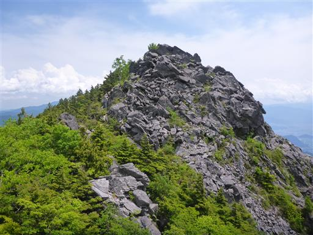
尾根道と分かれて下山道に入る。
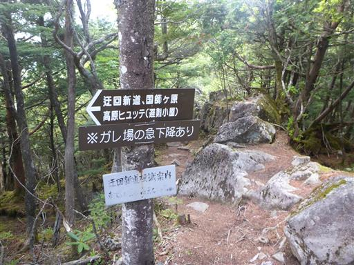
岩がばらばらと落ちていて急斜面の歩きにくい登山道だ。
足を乗せた岩が転がり、バランスをとるために振り上げた手が
金属製の標識にぶつかって右手を負傷してしまった。
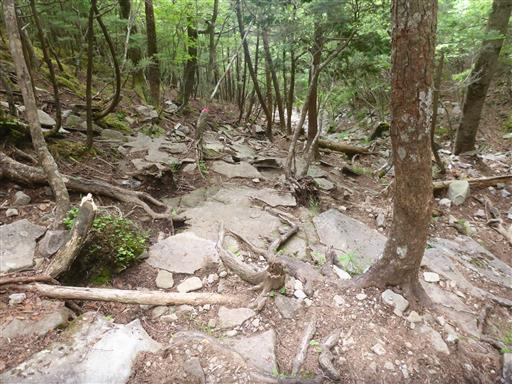
一際目立つヤマツツジ。
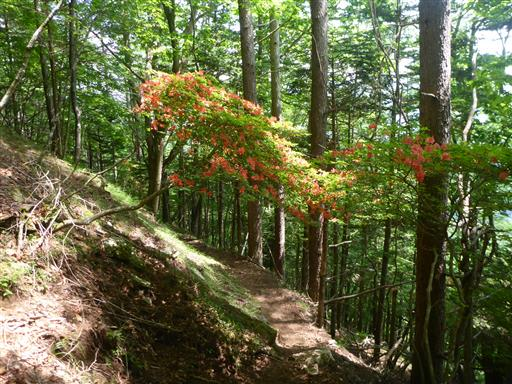
高原ヒュッテに到着。無人小屋だ。
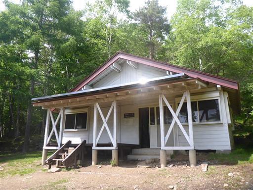
小屋周辺で一匹の鹿がウロウロしている。
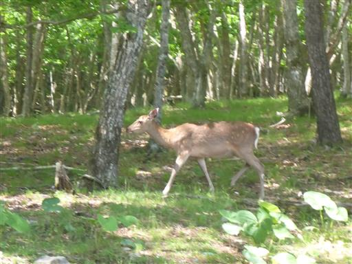
再び十字路に戻ってくる。8の字状なので、ここからまた別の道を歩く。
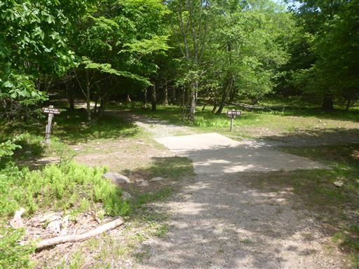
この小さな花は何だろう？
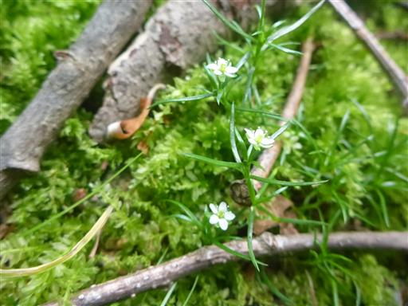
この辺りの道は登山道と言うより、半分車道だ。
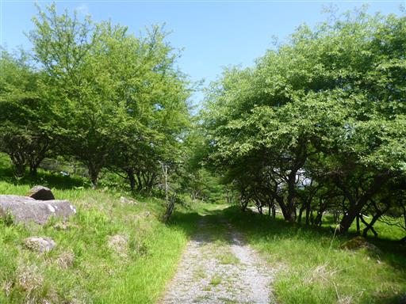
レンゲツツジが少しだけ咲いている。
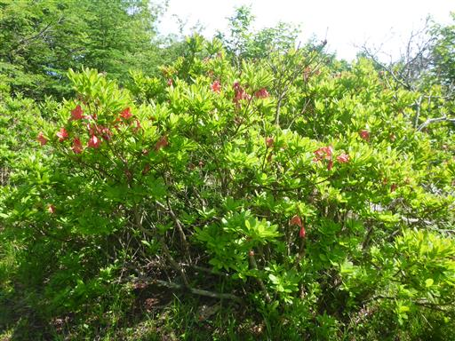
特徴のない尾根を下って行き、少し登ると道満山。
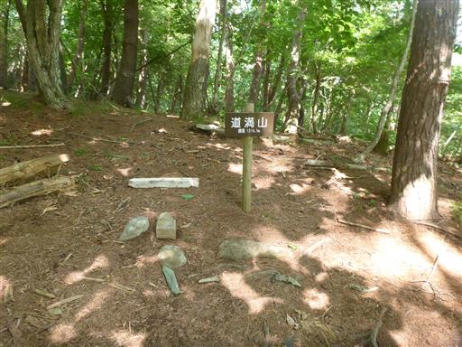
道満山から30分程度で下山。
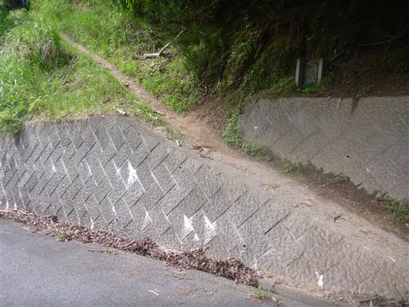
あとは車道を少し歩くのみ。動物除けゲートを抜けて、駐車場に戻る。
家族で登る久々の登山で、気温も高く、あまりペースがあがらなかった。
珍しく息子も疲れていたようだ。展望は今一だったが、
山頂近くの岩場は楽しんで登れてよかった。
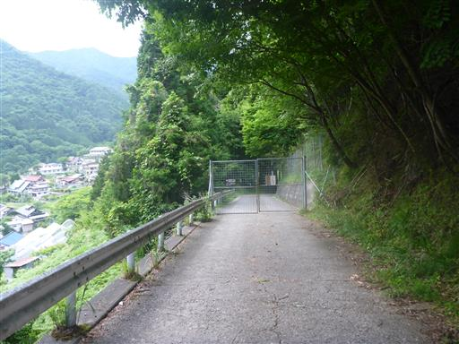